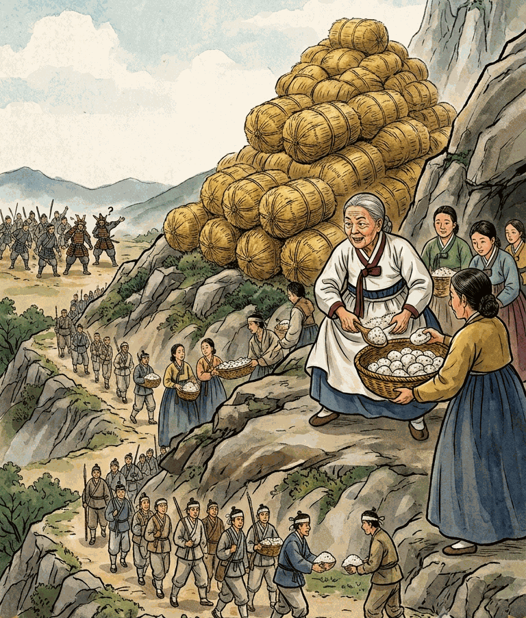
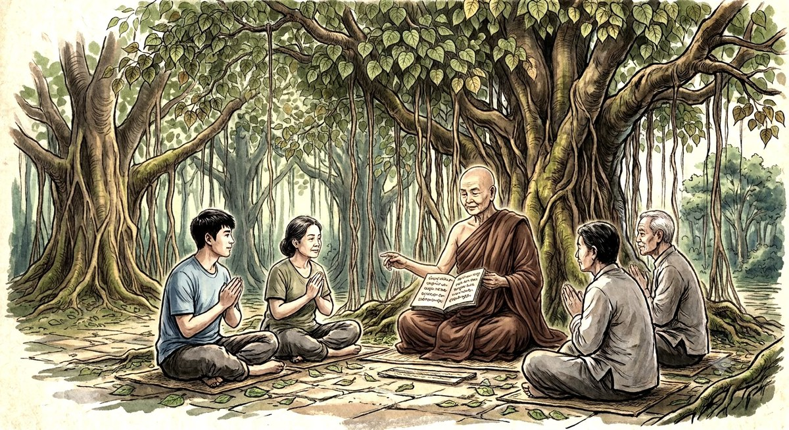
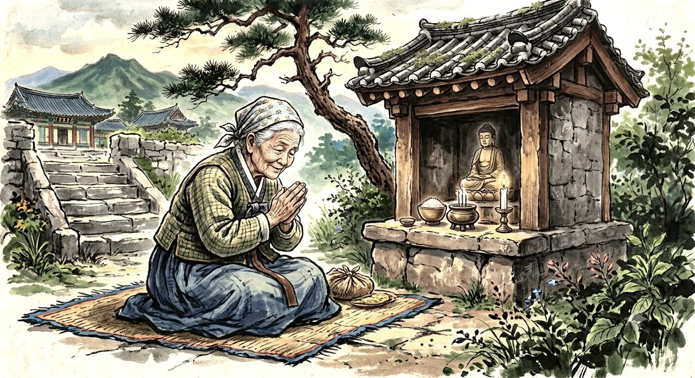
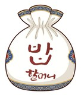

행주대첩의 여성 의병장 · 보시와 지혜의 역사
 기념사업
기념사업
‘밥할머니’의 보시와 나라사랑. 430여 년 전 그 위대한 정신을 오늘의 도심에서 되살립니다.
‘밥할머니’의 보시와 나라사랑. 430여 년 전 그 위대한 정신을 오늘의 도심에서 되살립니다.

‘밥할머니’는 보시할머니, 보살할머니로 불리며 조선 중기 불광동 일대에서 살았던 여성 불자로 전해집니다. 밀양 박씨 가문에 태어나 문씨(남평 문씨) 집안으로 시집을 간 여인으로, 높은 사회적 신분에 안주하지 않고 국난 극복을 위해 솔선수범한 ‘노블레스 오블리주’의 표상이었습니다.
“즉심시불(卽心是佛) — 일어난 마음 바로 그 자리에서 즉각 베풀고 실천하는 마음”
임진왜란으로 왜군이 쳐들어오자 선조 임금이 서울을 버리고 피란길에 올랐습니다. 관리들이 모두 도망가 행정이 마비된 가운데, 밥할머니는 한 치의 망설임 없이 자기 집 창고를 열어 곡식을 풀어 굶주린 백성들을 구원했습니다.
성실한 불제자였던 밥할머니는 서산대사(휴정 스님)의 승군을 돕기 위해 수많은 여인들을 이끌고 권율 장군이 분전하는 행주산성으로 향했습니다. 석전(돌팔매질)을 위한 돌을 앞치마로 주워 나르고, 분투하는 의군에게 주먹밥을 제공했습니다.
북한산성 일대 지형에 밝았던 밥할머니는 노적봉에 볏단을 쌓고 계곡에 석회 가루를 풀어 쌀뜨물처럼 보이게 하는 묘책으로, 군량미가 넘치는 것처럼 왜군을 속여 많은 생명을 구하는 탁월한 지혜를 발휘했습니다.
이 위대한 정신을 세상에 알리고자 했던 여정에는 기적 같은 부처님의 가호가 함께했습니다. 2024년 6월, 선선 스님이 전남 장흥의 해산토굴로 소설가 한승원 선생님을 찾아가 밥할머니를 위한 글을 부탁드렸고, 선생님은 망설임 없이 마음을 내어주셨습니다. 단 3일 만인 6월 15일 새벽 5시 56분, 가슴을 울리는 고결한 원고를 메일로 보내주셨습니다.
그리고 그해 10월 10일, 한승원 선생님의 따님이신 한강 작가님이 대한민국 최초이자 아시아 여성 최초로 노벨문학상 수상이라는 전 지구적 대경사를 맞이하게 되었습니다. 이는 불교의 인과법(因果法)과 ‘적선지가 필유여경(積善之家 必有餘慶)’의 진리를 그대로 증명한, 보시가 지닌 위대한 인과의 물결이었습니다.
“항상 베풀어라. 적으면 적은 대로 베풀고, 중간 정도면 또 그대로 베풀며, 많으면 많은 대로 베풀라. 베푸는 것이 없으면 아무런 가능성도 생기지 않는다.”
— 《수다보자나 자따까(Sudhabhojana Jataka)》
임진왜란이 일어나자 집안 곳간을 풀어 식량을 전부 이웃에 나누어 주었습니다. 이는 나눔과 베풂의 ‘보시 정신’의 구현이었습니다.
북한산에서 조선군과 명나라 군사가 왜군에 포위되어 전의를 상실하고 있을 때, 노적봉을 볏짚으로 쌓게 하고(노적가리), 북한산 계곡에서 흘러오는 창릉천에 횟가루를 풀어 쌀뜨물로 속이는 다군술책(多軍術策)으로 왜군이 겁을 먹고 포위를 풀게 하여 한·중·일 전투 없이 많은 생명을 구했습니다.
인근 행주산성으로 투입하여 행주치마부대를 이끌고 권율 장군을 도와 임진왜란 3대 대첩의 승전에 공신이 되었습니다. 국난 극복에 ‘단합된 국민통일 정신’을 보여주었습니다.
수많은 여인들을 모아 이끌고 행주산성으로 가 주먹밥을 만들고 행주치마 가득 돌멩이를 날라 민 · 군 합심으로 나라를 지켜내신 구고구난(救苦救難)의 보살행은, 보살 할머니께서 남기신 ‘보시 · 지혜 · 화합’ 정신의 장엄한 결정체였습니다. ‘밥할머니’는 요즘 세태의 개인 이기주의·물질 배금주의에 젖은 후손들에게 민족정기를 바르게 세울 수 있도록 대한민국 국민 모두에게 귀감이 되는 인물입니다.
“업(業)을 지은 대로 자기 존재가 생긴다.”
— tathā tanti attabhāvaṃ āgamma
“보시는 지혜를 피워내기 위한 뿌리, 밥할머니의 즉심시불(卽心施佛)의 보시행을 닮아갑시다.”

담마다나 스님이 밥할머니의 즉심시불 보시행과 노블레스 오블리주, 그리고 한강 작가님 노벨문학상 수상에 깃든 인과의 진리를 담아 써내려간 인사의 글 전문입니다.
— 서울 불광동의 <밥 할머니>에 대하여

'밥'의 원초적 사랑과 보시·화합의 정신, 개다리소반의 기억, 그리고 밥할머니의 보살행까지 — 소설가 한승원 선생님이 밥할머니에게 헌정한 특별 찬 기고문 전문입니다.
도탄에 빠진 백성을 구제하기 위해 스스로 자비의 손길을 내어주셨던 밥할머니의 호국 대원력을 오늘날 다시금 가슴에 새기고자 합니다. 밥할머니의 거룩한 정신이 살아 숨 쉴 동상 건립을 추진합니다.
밥할머니의 보시·지혜·화합 정신을 배우고 익히는 밥할머니 기념관 건립은 시대를 밝히는 지혜의 등불이 될 것입니다. 미래 세대에게 그 가르침을 전하는 배움의 장이 됩니다.

📥 《밥할머니의 보시와 나라사랑》 PDF 다운로드이 무량한 공덕의 가피에 귀하신 인연을 모시오니, 보시의 기쁨으로 동참하시어 뜻깊은 복전을 일구시기 바랍니다.
새마을금고 9002-2050-2156-5
🙏 문의 · 서울 은평구 불광동 129번지 ‘불광동 절’ · 담마다나 010-6805-1335